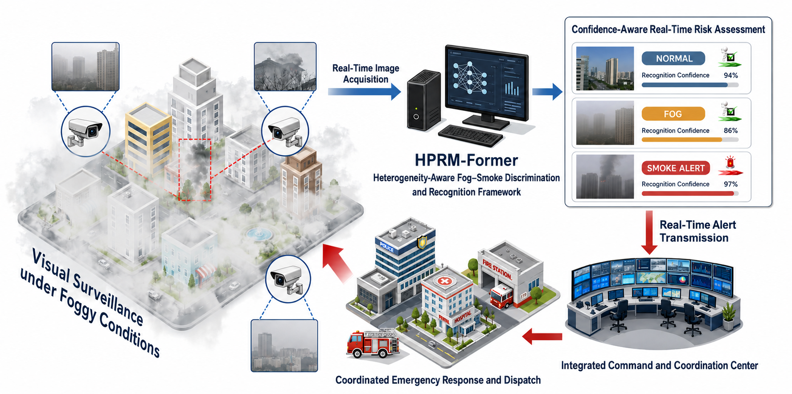

FSBench-40K
Foggy Smoke Benchmark-40K
面向雾环境下烟雾检测的四分类图像基准数据集
English · 数量与划分 · 申请数据 · 数据申请表
FSBench-40K 是 Foggy Smoke Benchmark-40K 的简称，面向雾环境下的图像级烟雾检测，重点关注烟与大气雾的区分及二者共存时的判别。数据集包含 Normal、Fog、Smoke 和 SmokeFog 四个类别，用于评价正常背景判别、雾干扰引起的误报以及雾中烟雾检测能力。
本仓库提供数据集介绍、代表性图像、划分说明和研究申请材料，与 HPRM-Former 研究配套。

图中为概念性应用流程，所示置信度用于示意。
任务与类别
基准任务为单幅图像的四分类，根据可见烟雾和大气雾的状态区分四类图像，尤其关注烟与雾共存的 SmokeFog 类别。
| 类别 | 图像状态 | 评价作用 |
|---|---|---|
| Normal | 无可见烟雾和大气雾 | 正常背景参照 |
| Fog | 有雾，无可见烟雾 | 雾干扰下的误报评价 |
| Smoke | 有烟，无共存的大气雾 | 烟雾状态分类 |
| SmokeFog | 烟与大气雾共存 | 雾干扰下的烟雾检测 |
进行图像级预警评价时，Smoke 与 SmokeFog 为正类，Normal 与 Fog 为负类。Smoke 与 SmokeFog 之间的相互误判属于四分类错误，但不计为漏报。
代表性图像

上图各行依次为 Normal、Fog、Smoke 和 SmokeFog。完整图像通过数据申请流程提供。
数量与划分
当前论文报告 40,579 张图像，训练、验证与测试的目标比例为 80% / 10% / 10%。下表列出当前稿件的类别与划分数量；获批交付版本的具体数量与图像清单随数据包提供。
| Split | Normal | Fog | Smoke | SmokeFog | Total |
|---|---|---|---|---|---|
| Train | 8,290 | 7,304 | 8,815 | 8,053 | 32,462 |
| Validation | 1,036 | 913 | 1,101 | 1,006 | 4,056 |
| Test | 1,037 | 913 | 1,103 | 1,008 | 4,061 |
| Total | 10,363 | 9,130 | 11,019 | 10,067 | 40,579 |
- 训练集（train）：用于学习模型参数。
- 验证集（val）：用于配置选择和最佳检查点选择。
- 测试集（test）：模型与评价设置固定后，用于最终评价。
开展基准比较时使用随数据提供的固定划分。版本记录说明划分协议和已建立的来源分组信息，清单字段与同源分组原则见划分说明。
数据组织与版本
图像数据采用如下类别文件夹组织方式：
FSBench-40K/
├── train/
│ ├── Normal/
│ ├── Fog/
│ ├── Smoke/
│ └── SmokeFog/
├── val/
│ ├── Normal/
│ ├── Fog/
│ ├── Smoke/
│ └── SmokeFog/
└── test/
├── Normal/
├── Fog/
├── Smoke/
└── SmokeFog/获批交付时同时提供版本编号、类别映射、训练／验证／测试清单、完整性校验和与版本说明。清单记录图像所属类别和集合；已建立的来源分组与来源说明一并保留。
完整图像由通讯作者另行提供，本仓库发布展示内容与申请材料。版本记录方式见版本说明。
获取方式
- 阅读申请指南与使用要求。
- 下载并填写可填写的申请表 PDF，注明研究目的、使用人员、用途与数据保管方案，并完成签字。
- 将申请表发送至通讯作者 Haicheng Qu（quhaicheng@lntu.edu.cn），优先使用机构邮箱。
- 经审核同意后，由通讯作者提供完整数据及其固定版本、类别和训练／验证／测试划分说明。
通讯作者单位：School of Software, Liaoning Technical University。请通过邮件提交申请，勿在公开 Issue 中上传填写后的申请表。
主要使用要求
- 仅在获批的研究目的、项目和使用期限内使用；商业、产品开发或实际业务用途需另行说明并获得书面许可。
- 仅限申请人及获批团队成员访问；新增成员、负责人或机构变更应先更新申请。
- 如实填写身份、机构及项目资料，优先使用机构邮箱；没有机构邮箱时提供可核实的研究身份信息。
- 使用受访问控制的存储，保护下载链接和备份；外部云服务或第三方处理平台应在申请中说明。
- 不向未获批人员提供数据包、逐图副本或访问链接，不建立未经允许的公开镜像；原始第三方许可已经赋予的权利不受此项限制。
- 保留来源说明，遵守交付清单中的第三方条件；本项目不授予其无权授予的版权许可。
- 按交付的引用信息注明数据集、关联论文及必要的原始来源，并报告所用数据版本。
- 基准比较保留图像编号和划分清单，测试集不参与选模型；自定义划分、额外训练数据、重标注及预处理变化应明确报告。
- 可以正常发表汇总结果和模型研究；发布样例原图或包含可还原原图的衍生数据前检查相应许可，不以结果有利或共同署名作为访问条件。
- 仅开展声明的视觉研究，不识别或联系图中个人，不提取与研究无关的个人信息。
- 发现重复、标签、来源权利或数据暴露问题时，提供版本和图像编号反馈，并记录实验采用的本地修订。
- 研究之外的使用应自行验证适用性；数据访问不构成对模型或实际火灾预警系统的认证。
- 项目目的、成员、机构或期限变化时申请更新；期满按书面批准记录处理保留、延期或删除。
- 申请表私下发给通讯作者，仅用于审核和访问管理，不在公开GitHub Issue中提交个人信息。
相关论文
A Heterogeneity-Aware Prototype Routing Transformer with Consensus-Disagreement Memory for Smoke Detection under Foggy Conditions
Yao Wei, Haicheng Qu, Tong Gao, Hao Chen, and Cuiping Shi
HPRM-Former 是与本数据集配套的烟雾检测分类框架，模型结构与三个核心模块的说明见模型介绍页面。
引用与联系
完整引用格式见英文首页。当前采用审稿中稿件的引用信息，发表后更新正式出版信息。使用数据时请同时报告交付版本编号，并遵循交付材料中的来源引用要求。数据访问、来源说明或更正事宜请联系 quhaicheng@lntu.edu.cn。